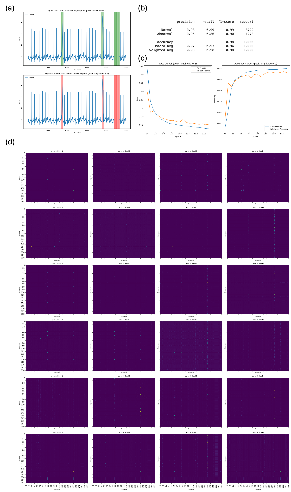

4.2 Testing the Model on Real ECG Data
After extensively validating the model on synthetic data, we proceeded to test its performance on real ECG signals with injected anomalies. For this evaluation, the MIT-BIH dataset was used as the base signal, with two types of anomalies—peaks and breaks—added, as previously described in Section 4.1.
The injected anomalies hold clinical relevance as they can represent critical cardiac conditions. Peaks in ECG signals may indicate heightened cardiac electrical activity. This is associated with conditions such as hyperkalemia, where peaked T waves reflect elevated potassium levels in the blood, potentially causing fatal cardiac dysrhythmias
[32] [33]. Peaks can also indicate left ventricular hypertrophy, characterized by high R-peak amplitudes due to thickened ventricular walls impairing blood pumping efficiency
[34]. Another condition linked to peaks is bundle branch blocks, where delays in electrical signal transmission can lead to other cardiac complications
[35].
In contrast, breaks in the ECG signal indicate interruptions in electrical activity and are equally significant. Breaks can reflect asystole, a life-threatening condition where the heart's electrical activity ceases entirely, leading to cardiac arrest
[36]. They may also indicate bradycardia, where an abnormally slow heart rate results in prolonged intervals between beats, causing reduced blood flow and ischemic damage
[37]. Sinus arrest, another condition linked to breaks, involves a failure of the sinus node to generate impulses, causing pauses in cardiac rhythm with serious complications
[38]. Lastly, atrioventricular block, where signal transmission from the atria to the ventricles is impaired, can lead to dizziness, fainting, or even cardiac arrest
[39].
By evaluating the model on real ECG data with injected anomalies indicative of clinically significant pathological events, we aim to assess its effectiveness in detecting critical cardiac conditions. The results are presented in Figure
6 . The learning curves show that the model required more than 10 epochs to achieve a stable loss and accuracy, reflecting the added complexity of using real ECG signals instead of random noise as the background. By around 20 epochs, the model converged, effectively learning to detect the injected anomalies. In terms of accuracy metrics (Figure
6b), the model performed at a satisfactory level, achieving an overall accuracy of 98%. However, the recall for abnormal samples was slightly lower at 0.86, indicating that 14% of abnormal instances were misclassified as normal. This could be attributed to the increased challenge of distinguishing injected peaks from naturally occurring features in the ECG signals, as real ECG peaks sometimes resemble the injected ones. Visual inspection of the test set classification results further revealing cases at the transitioning zones of anomalies resembling those described in Figure
4, where distinguishing between normal and abnormal segments was nearly impossible. Nonetheless, the model demonstrated strong performance in detecting the two types of anomalies, with metrics indicating effectiveness.
To further understand how the model detects anomalies, we analyzed the attention weights across its 24 heads (4 heads per layer across 6 layers). The attention weight heatmaps for specific sequences were obtained after the query-key multiplication and SoftMax operation, but before multiplying by the value matrix. For a sequence of length T, the attention heatmap is of size 𝑇 × 𝑇. Each row corresponds to the attention given by a query token to all other tokens, while each column corresponds to the attention received by a key token from all queries. Brighter grid colors indicate higher attention values, meaning the query token is focusing more on the corresponding key token.
The attention maps in Figure
6d correspond to the sequence shown in Figure
6a. Starting from layer 1, heads 1, 2, and 3 show that queries are beginning to attend to the keys of tokens corresponding to the locations of the two peaks. In layer 2, head 4 also begins to highlight these regions, with two bright dotted lines marking the peaks. By layers 3 and 4, the attention becomes more pronounced, with layer 3 head 4 faintly highlighting a band near the end of the sequence corresponding to the break. Interestingly, layer 4 head 3 displays numerous vertical dotted lines, indicating that queries are attending to all peaks, including both the abnormal peaks and the normal ECG peaks. This pattern persists in layer 5, heads 1 and 3.
By the final layer, however, the model’s attention becomes more refined. The four heads in layer 6 focus almost exclusively on the two abnormal peaks and one break, with minimal attention given to the normal ECG peaks. While faint traces of attention to normal peaks remain in heads 2 and 4, the abnormal regions dominate the attention maps. Layer 6 head 3 displays the clearest and most focused attention on the anomalies, capturing both the peaks and the break with high precision.
This progression across layers highlights the hierarchical nature of the transformer architecture. The first layers capture initial patterns and respond to multiple features, while deeper layers refine the focus, isolating the truly anomalous patterns. This ability to progressively differentiate signal features further shows the model’s capacity for anomaly detection and demonstrates its interpretability, which is critical for clinical applications, where understanding how a model arrives at its decisions is essential for trust and reliability.

Figure 6. Model Performance on Real ECG Data with Injected Anomalies. (a) Example of predicted anomalies (top) versus ground truth anomalies (bottom) from the test set. (b) Accuracy metrics. (c) Loss and accuracy curves over 20 training epochs. (d) Attention weight heatmaps for all 24 attention heads (4 heads per layer across 6 layers).